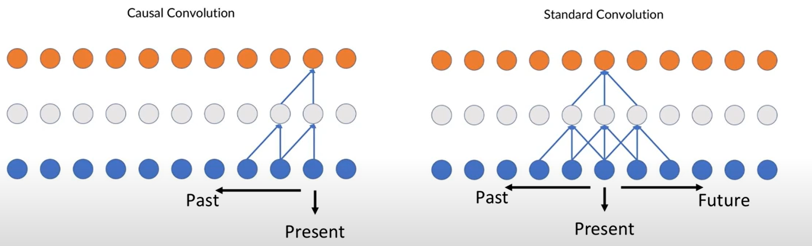
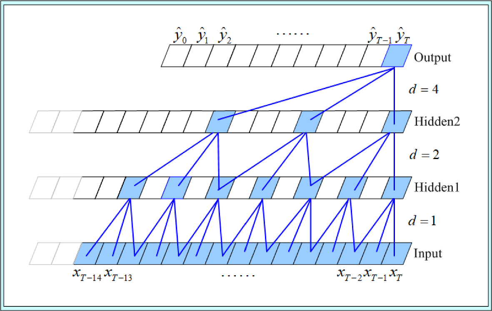
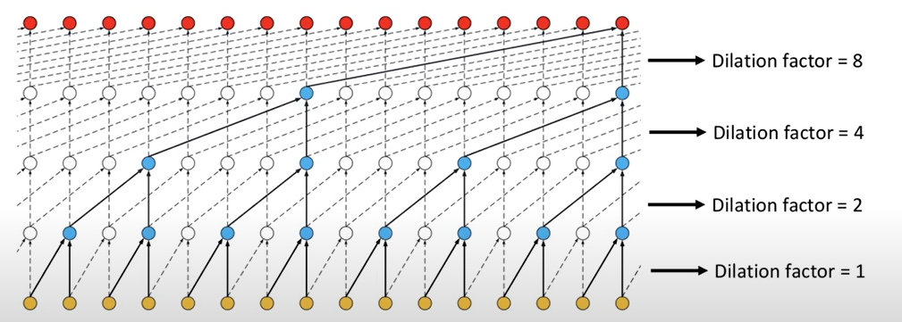

Revision Teorica: Modelos de prediccion#
Suavizamiento exponencial#
El Suavizamiento exponencial (SE) es una técnica de series temporales que asigna mayor peso a las observaciones más recientes, reduciendo la influencia de datos más antiguos. En este estudio se utilizarán los modelos de suavización exponencial de primer y segundo orden.
SE(1): Este modelo se utiliza para series de tiempo sin tendencia ni estacionalidad. Ajusta los datos dando más peso a las observaciones recientes y está dado por:
\[ \tilde{y}_t=\lambda y_t + (1-\lambda)\tilde{y}_{t-1} \]La suavización exponencial de primer orden puede verse como una combinación lineal de la observación actual y la observación suavizada en un tiempo previo. Definiendo a \(\lambda\) como factor de corrección siendo \(|\lambda|<1\).
SE(2): Extensión del SE(1) que incluye una componente de tendencia lineal. Dada la suavización exponencial de segundo orden definida por:
\[ \tilde{y}^{(2)}_T=\lambda \tilde{y}^{(1)}_T + (1-\lambda)\tilde{y}^{(2)}_{T-1} \]Donde \(\tilde{y}^{(1)}_T\) y \(\tilde{y}^{(2)}_T\) denotan las suavizaciones exponenciales de primer y segundo orden respectivamente y el predictor de \(\tilde{y}_T\) está dado por:
\[ \tilde{y}_T = 2\tilde{y}^{(1)}_T - \tilde{y}^{(2)}_T \]
Suavizamiento exponencial - Holt-Winters#
Los modelos de suavización de Holt-Winters son variantes del Suavizado Exponencial de Holt-Winters, que se diferencian principalmente en cómo manejan la componente estacional de la serie de tiempo. En donde SE-HW(1) es aditivo, SE-HW(2) es multiplicativo, y SE-HW(3) es una variante mixta.
SE-HW(1) - Holt-Winters Aditivo
Este modelo asume que la componente estacional es aditiva, es decir, la magnitud de la estacionalidad es constante a lo largo del tiempo. Es adecuado para series de tiempo donde la estacionalidad no depende del nivel de la serie.
\[ \hat{y}_{t+h} = \ell_t + h b_t + s_{t+h-m} \]Donde,
\[ \ell_t = \alpha(y_t - s_{t-m}) + (1 - \alpha)(\ell_{t-1} + b_{t-1}) \]\[ b_t = \beta(\ell_t - \ell_{t-1}) + (1 - \beta)b_{t-1} \]\[ s_t = \gamma(y_t - \ell_{t-1} - b_{t-1}) + (1 - \gamma)s_{t-m} \]\(s_t\): Componente estacional.
\(m\): Longitud del ciclo estacional (por ejemplo, 12 para datos mensuales con estacionalidad anual).
\(\gamma\): Parámetro de suavizado estacional.
SE-HW(2) - Holt-Winters Multiplicativo
Este modelo asume que la componente estacional es multiplicativa, es decir, la magnitud de la estacionalidad varía proporcionalmente con el nivel de la serie. Es adecuado para series de tiempo donde la estacionalidad aumenta o disminuye con el nivel de la serie.
\[ \hat{y}_{t+h} = (\ell_t + h b_t) \cdot s_{t+h-m} \]\[ \ell_t = \alpha\left(\frac{y_t}{s_{t-m}}\right) + (1 - \alpha)(\ell_{t-1} + b_{t-1}) \]\[ b_t = \beta(\ell_t - \ell_{t-1}) + (1 - \beta)b_{t-1} \]\[ s_t = \gamma\left(\frac{y_t}{\ell_{t-1} + b_{t-1}}\right) + (1 - \gamma)s_{t-m} \]SE-HW(3) - Holt-Winters Mixto
Este modelo combina componentes aditivos y multiplicativos, permitiendo que algunas partes de la serie tengan estacionalidad aditiva y otras multiplicativa. Es útil cuando la serie de tiempo muestra un comportamiento mixto, donde la estacionalidad no es completamente aditiva ni multiplicativa.
ARIMA(p,d,q)#
El modelo ARIMA combina términos autorregresivos (AR), de integración (I) y de medias móviles (MA). Se denota como ARIMA(p,d,q) y se define como:
Donde el pronóstico para un periodo \(\tau\) en el futuro se puede calcular como:
GARCH#
GARCH, por sus siglas en inglés (Generalized Autoregressive Conditional Heteroskedasticity), es un modelo utilizado para capturar la volatilidad en series temporales, comúnmente aplicado en datos financieros, pero también útil en problemas ambientales donde la variabilidad de la contaminación presenta heterocedasticidad condicional [HBAB24].
El modelo \(GARCH(p, q)\) se define mediante dos ecuaciones: una para la media y otra para la varianza condicional.
Donde:
\(y_t\): Valor de la serie en el tiempo \(t\).
\(\mu\): Media incondicional de la serie.
\(\epsilon_t\): Término de error en el tiempo \(t\), con \(\epsilon_t \sim N(0, \sigma_t^2)\).
\(\sigma_t^2\): Varianza condicional en el tiempo \(t\).
\(\omega\): Término constante (intercepto) en la ecuación de la varianza.
\(\alpha_i\): Coeficientes asociados a los términos \(\epsilon_{t-i}^2\) (efectos de los errores al cuadrado rezagados).
\(\beta_j\): Coeficientes asociados a los términos \(\sigma_{t-j}^2\) (efectos de las varianzas condicionales rezagadas).
\(p\): Orden de los términos \(\epsilon_{t-i}^2\) (componente ARCH).
\(q\): Orden de los términos \(\sigma_{t-j}^2\) (componente GARCH).
Para garantizar que la varianza condicional sea positiva y estacionaria, se imponen las siguientes restricciones:
Modelos de Deep-Learning#
En adición a los modelos previamente vistos, también se utilizará para comparar con el modelo escogido, 3 modelos de deep-learning los cuales son MLP, RNN y LSTM, estos se definirán a continuación.
MLP (Multi-Layer Perceptron): Este es el nombre de una red neuronal de propagación hacia adelante moderna que consta de neuronas totalmente conectadas con funciones de activación no lineales, organizadas en capas, que se destaca por ser capaz de distinguir datos que no son linealmente separables [Bis19]. La salida de una neurona en una capa de perceptrón está dada por:
\[ y = f\left(\sum_{i=1}^n w_i x_i + b\right) \]Donde:
\(f\): Función de activación (Por ejemplo, ReLU, sigmoide).
\(w_i\): Pesos de la red.
\(b\): Término de sesgo (bias).
\(x_i\): Entradas de la red.
RNN (Redes Neuronales Recurrentes): Es un tipo de red neuronal creada para procesar datos secuenciales como las series de tiempo, donde el orden de los elementos es importante. A diferencia de las redes neuronales de propagación hacia adelante, las RNN utilizan conexiones recurrentes, donde la salida de una neurona en un paso de tiempo se devuelve como entrada a la red en el siguiente paso de tiempo [She20].
\[ h_t = f(W_h h_{t-1} + W_x x_t + b) \]Donde:
\(h_t\): Estado oculto en el tiempo \(t\).
\(W_h\): Matriz de pesos para el estado oculto anterior.
\(W_x\): Matriz de pesos para la entrada actual.
\(b\): Término de sesgo.
\(f\): Función de activación (Por ejemplo: tanh, ReLU).
LSTM (Long-Short Term Memory): Las LSTM son una variante de las RNN diseñadas para capturar dependencias de largo plazo mediante el uso de celdas de memoria y puertas, tratando de evitar el desvanecimiento del gradiente [SNTN19]. Estas se han utilizado para el análisis de series de tiempo, por tal motivo se utilizará como modelo para comparar con el original.
\[\begin{split} \text{Formulación:} \begin{cases} \text{Puerta de olvido: } f_t = \sigma(W_f [h_{t-1}, x_t] + b_f) \\ \text{Puerta de entrada: } i_t = \sigma(W_i [h_{t-1}, x_t] + b_i) \\ \text{Celda candidata: } \tilde{C}_t = \tanh(W_C [h_{t-1}, x_t] + b_C) \\ \text{Actualización de celda: } C_t = f_t \cdot C_{t-1} + i_t \cdot \tilde{C}_t \\ \text{Puerta de salida: } o_t = \sigma(W_o [h_{t-1}, x_t] + b_o) \\ \text{Estado oculto: } h_t = o_t \cdot \tanh(C_t) \end{cases} \end{split}\]Donde:
\(\sigma\): Función sigmoide.
\(W_f, W_i, W_C, W_o\): Matrices de pesos.
\(b_f, b_i, b_C, b_o\): Términos de sesgo.
\(C_t\): Estado de la celda en el tiempo \(t\).
\(h_t\): Estado oculto en el tiempo \(t\).
Temporal Convolutional Network#
Las redes neuronales convolucionales temporales (TCN) han surgido como una alternativa a las redes neuronales recurrentes (RNN) para el modelado de datos secuenciales, como las series de tiempo. A diferencia de las RNN, que procesan los datos de manera secuencial, las TCN utilizan convoluciones causales y dilatadas, lo que permite el procesamiento en paralelo y una mejor captura de dependencias a largo plazo sin los problemas de desvanecimiento del gradiente [LVRH16].
Una TCN se compone de capas convolucionales unidimensionales que aplican filtros sobre secuencias temporales. La salida de una capa convolucional está dada por:
donde \( w_i \) representa los pesos del filtro convolucional, \( x_{t-d \cdot i} \) es la entrada en el tiempo \( t \) desplazada por un factor de dilatación \( d \), \( k \) es el tamaño del kernel y \( b \) es un término de sesgo.

Las TCN presentan dos características fundamentales que las diferencian de las redes recurrentes: Convoluciones causales las cuales garantizan que la salida en un instante \( t \) solo dependa de valores anteriores en la secuencia, evitando el acceso a información futura, y Convoluciones dilatadas las cuales permiten expandir el campo receptivo de la red sin aumentar significativamente el número de parámetros, facilitando la captura de patrones de largo alcance en la serie temporal.

La formulación completa de una TCN con múltiples capas está dada por:
donde \(h^{(l)}_t\) es la activación de la capa \(l\) en el tiempo \(t\), \(W_i^{(l)}\) son los pesos del filtro convolucional en la capa \(l\), \(d\) es el factor de dilatación, y \(\sigma\) es la función de activación (por ejemplo, ReLU).
Además, las TCN incorporan conexiones residuales, lo que permite mejorar la estabilidad del entrenamiento y facilita la propagación del gradiente en redes profundas. La estructura final de la red se define como:
donde \(\text{BatchNorm}\) representa la normalización por lotes y \(\text{Conv1D}\) es una capa convolucional unidimensional. Gracias a estas propiedades, las TCN han demostrado un rendimiento competitivo en tareas de predicción de series temporales, superando en muchos casos a los modelos recurrentes tradicionales no solo en resultados competitivos sino en tiempos computacionales ya que este modelo puede ser procesado de forma paralela [LBCGLRR20].
En caso que el modelo tenga mas capas, el factor de dilatacion \(d\) esta dado por \(d=2^{(n-1)}\), esta estructura queda de la siguiente forma:
